From the Final Eight to the Final Two.
If this week proved anything, it’s that knockout football is just organised emotional damage. The quarter-finals gave us late winners, heavyweight exits and enough tension to power a small country. The semi-finals somehow raised the stakes again.
We began this stretch with France, Morocco, Spain, Belgium, Norway, England, Argentina, and Switzerland. Now only Spain and Argentina remain, after Spain dismantled France and Argentina broke England hearts in Atlanta.
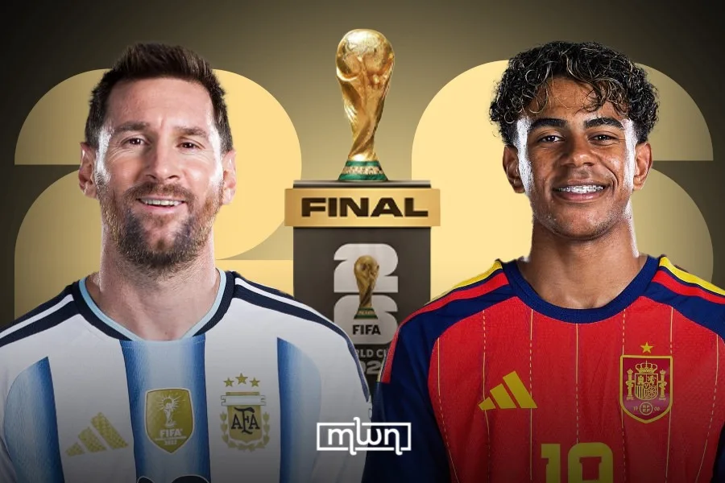
🎵 Song of the Week
This week’s pick: Everybody Wants to Rule the World — Tears for Fears
Because that is now literally what is left: two football superpowers, one trophy, and several eliminated nations wondering how it all slipped away so fast.
Let's all laugh at England.
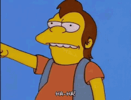
Just when England thought they had it, Argentina did what Argentina keep doing in this tournament: survive the panic, lean on genius, and rip the script up in the closing minutes.
England led 1–0 through Anthony Gordon and were five minutes from a first World Cup final since 1966. Then the floor disappeared. Enzo Fernández equalised in the 85th minute, Lautaro Martínez headed in the winner in stoppage time, and Lionel Messi assisted both goals.
That means Argentina are through to another World Cup final, one win away from retaining the title. England, meanwhile, are left with that familiar sinking feeling that football has once again found a new and imaginative way to hurt them.
👑 Spain didn’t reach the final — they marched into it
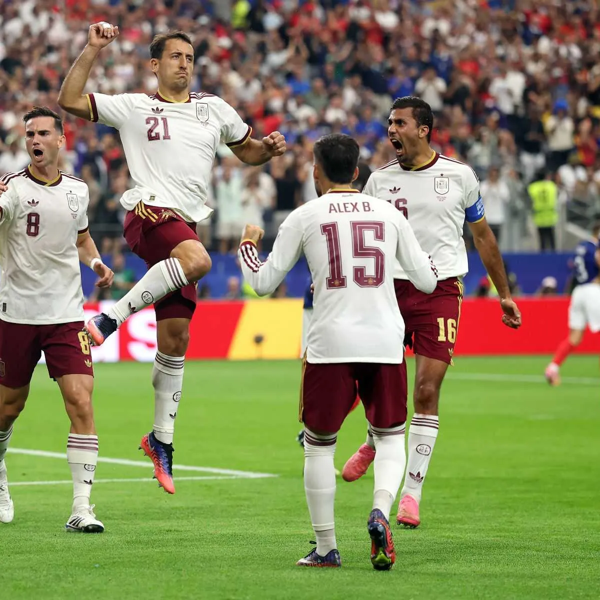
Spain’s 2–0 win over France in the semi-final was not a smash-and-grab or a lucky escape. It was a controlled demolition.
Mikel Oyarzabal scored from the spot, Pedro Porro added the second, and France never looked comfortable enough to turn the game back into a fight. Spain pressed well, defended brilliantly, and made one of the tournament favourites look second-best for long stretches.
The result sent Spain into their first World Cup final since 2010. More importantly, it sent a message: this is no longer just the team playing nice football — this is the team dictating the whole tournament.
📱 Posted and delivered
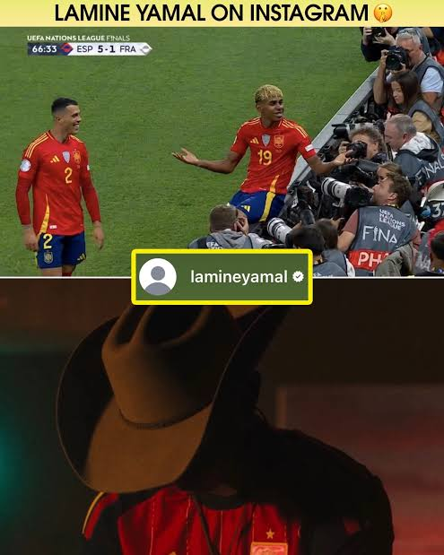
The build-up to France vs Spain had proper edge, and Lamine Yamal was doing absolutely nothing to calm it down. Before the semi-final, he was posting on Instagram like a man submitting supporting evidence.
Yamal shared photos from Spain’s previous wins over France, which is an incredibly funny way to prepare for a World Cup semi-final. Not nerves. Not clichés. Just a digital reminder: you have seen this film before, and I was in it.
He had already said Spain feared nobody and that France should be worried about them. Then Spain went out, controlled the match, won 2–0, and made the whole thing look like he had accidentally leaked the script.
⏰ Merino Time: Belgium’s golden goodbye
Spain 2–1 Belgium
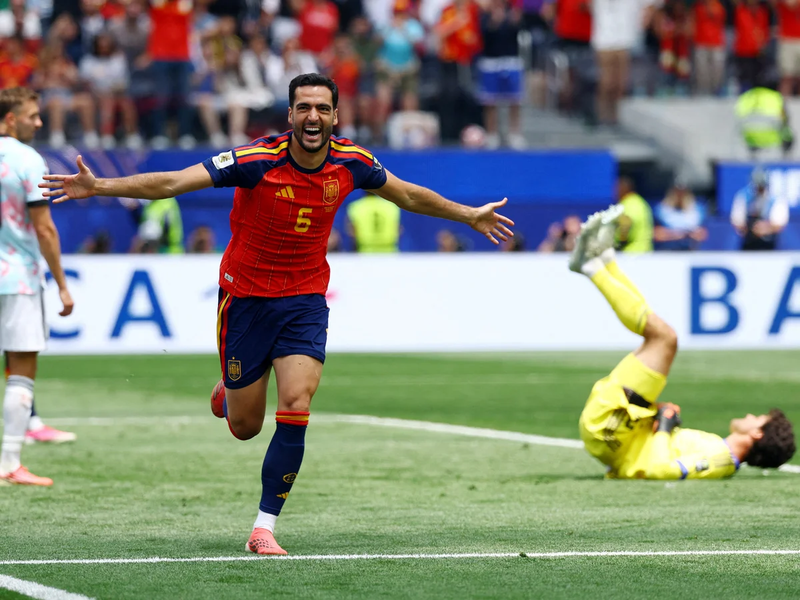
The quarter-finals gave us one of the cruelest endings of the lot. Belgium were still standing late, still believing, still trying to drag Spain into extra-time. Then Mikel Merino struck in the 88th minute and shut the door.
Spain’s 2–1 win sent them into the semis and left Belgium staring at what felt like the end of an era. For so long the so-called golden generation carried expectation like a backpack full of bricks. This looked like the final World Cup bow for several of the names who defined it.
🌍 Morocco’s run deserved more than the word “surprise”
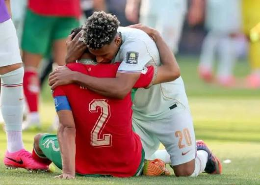
Morocco’s tournament will be remembered for more than being a nice underdog story. They brought intensity, resilience, and the kind of belief that makes bigger teams deeply uncomfortable.
Their run eventually ended against France, but they were far beyond the “happy to be here” stage by then. Morocco spent this World Cup looking like a side that expected to compete, not just participate, and that shift matters.
Fairytale? Yes. But also a proper football team with proper bite.
🦈 Cabo Verde: respect is due
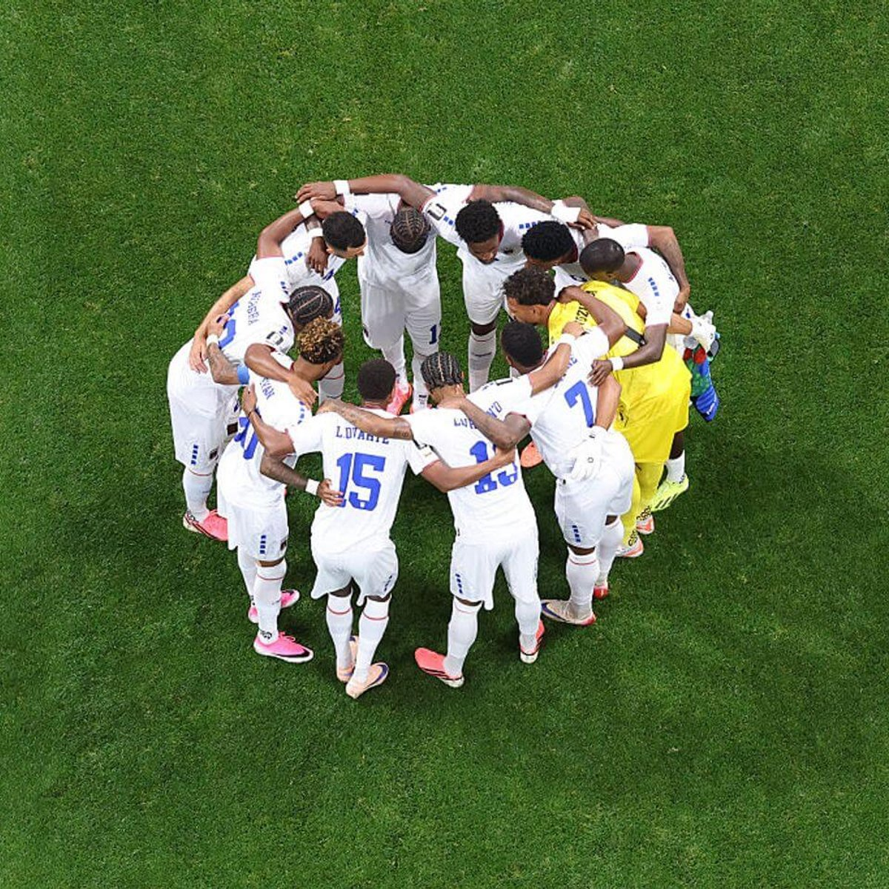
We need to hail up Cabo Verde one more time. Real ball knowers understand why. No matter who lifts the trophy between Argentina and Spain, the Blue Sharks can say they hung with both of them.
At their first ever World Cup, they did not just make up the numbers. They bit chunks out of the biggest fish in the tank. They took Argentina to extra-time and remain the only team to stop Spain winning in 90 minutes. That is not a plucky underdog story. That is a proper tournament footprint.
This team played the underdog role to perfection — disciplined, awkward, fearless, and absolutely not interested in being anyone’s feel-good side note. Pico Lopes may have looked like he was recruited via LinkedIn, but he handled the flanks like a man clocking into his dream job. Frankly, give him a promotion to Minister of Defence.
A shamrock with four leaves turned out to be the good luck charm, and while this World Cup has produced no shortage of giant headlines, Cabo Verde have carved out one of the most memorable stories of the lot. They arrived as debutants. They leave as part of tournament folklore.
🛁 From bath time to battle for the world
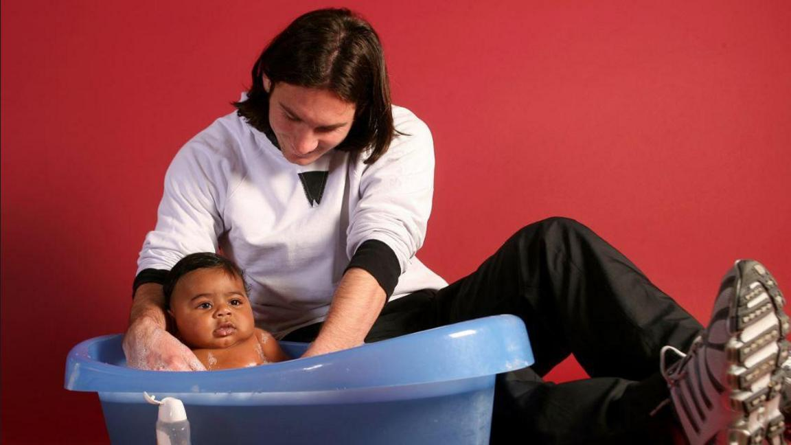
There are football storylines, and then there is this one. Years before this final, Lionel Messi was photographed helping to bathe a baby Lamine Yamal. Now they are meeting in a World Cup final.
Which is frankly absurd. The greatest player of one era lining up against the teenager he once literally gave a bath to feels less like normal sporting build-up and more like football disappearing completely into its own mythology.
Messi is still here, still deciding matches, still dragging Argentina through tournament chaos like a man refusing to let go of history. Lamine, meanwhile, is the fearless new arrival — posting on Instagram before the France game, talking like he feared nobody, and then helping Spain reach the final like this was all part of the plan.
If Spain win, everyone will call it a passing of the torch. If Argentina win, the handover can wait.
🤡 The Americans have reached half-time
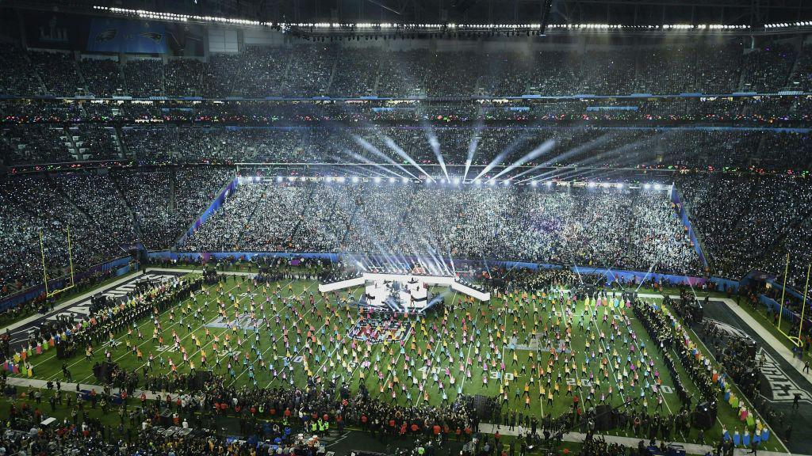
There was always a danger that once the World Cup landed in North America, someone would look at the final and think: “You know what this needs? More production.”
So here we are: for the first time ever, the World Cup final is getting a half-time show. Not half-time analysis. Not a quick replay package. An actual concert.
Madonna, Shakira and BTS are headlining the whole thing in New Jersey, in what can only be described as FIFA giving in fully to American influence and deciding that even the biggest match in world football could do with a bit more Super Bowl in it.
The performance is expected to run for about 11 minutes, with the overall break reportedly stretching well beyond normal football half-time. Because obviously what every exhausted player needs before the second half of a World Cup final is to stand around while a stadium becomes a pop festival.
Somewhere, a purist is currently muttering into a flat pint about “the soul of the game.” Somewhere else, FIFA is adding pyrotechnics.
🔦 Nation Spotlight: Argentina
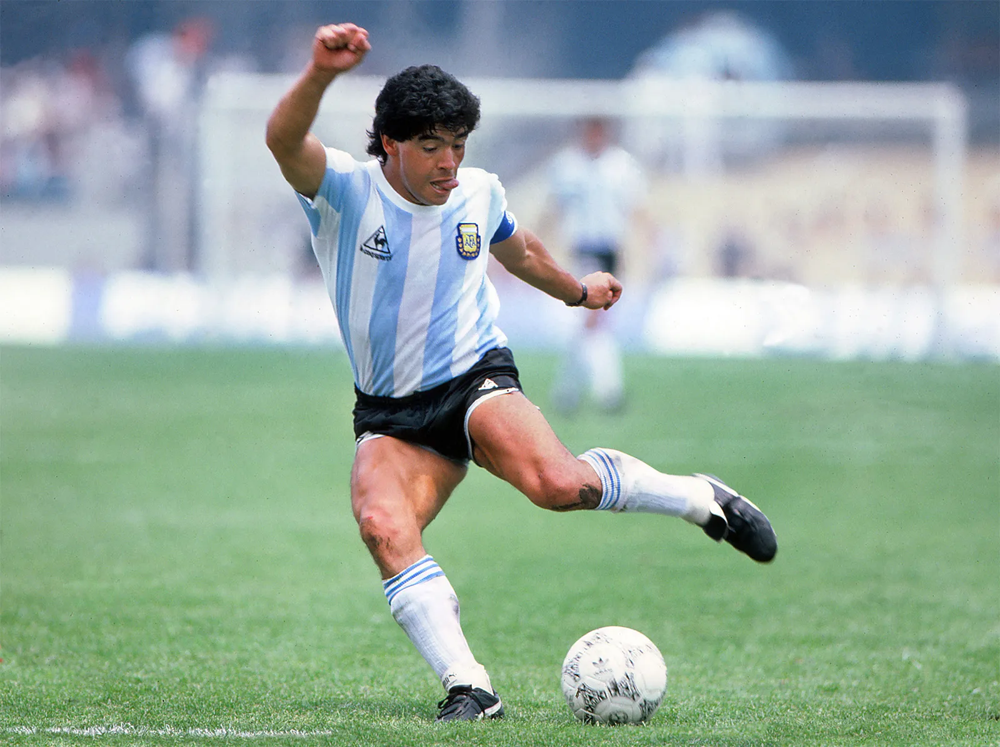
Famous Footballer: Diego Maradona
National Dish: Asado — less a meal, more a national event involving fire, meat, and people taking it extremely seriously.
Weird Fact: Argentina is home to the widest avenue in the world, Avenida 9 de Julio, because subtlety is optional there too.
Spirit of Choice: Fernet with cola — bitter, chaotic, and somehow perfect once you commit to it.
World Cup Chances: ⭐⭐⭐⭐⬛
Argentina do not do calm. They flirt with disaster, stare into the abyss, and then produce moments that feel scripted by someone who enjoys drama a bit too much. Against England they were nearly out, until they absolutely were not. That is now the essence of their tournament.
🔭 Looking ahead
There is no gentle version of what comes next. This is the final the tournament has landed on: Argentina vs Spain.
- World Cup Final: Argentina vs Spain
- Third-place play-off: France vs England
France being knocked out means I don't care about the sweepstake. That also means I will not be contributing to the prize pool. Shoutout to Sally for collecting no money. If the winners have an issue you know who to contact ;)
🏝️ The Fire Pit
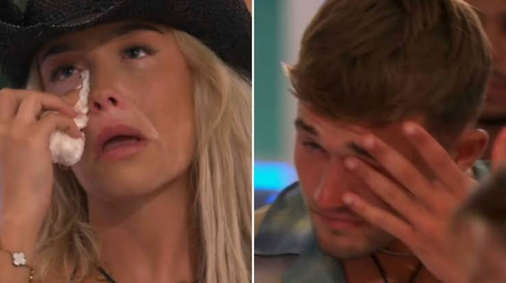
The main story from the last week is Ellie leaving the villa after Finley was dumped. After a public vote left several Islanders vulnerable, the others chose to send Finley and Martha home, and Ellie then decided to go too because she felt there was no point staying so close to the final without him.
Why it was such a big deal
Ellie and Finley had just started to repair things. Their relationship had been a mess for days after Finley’s head turned for bombshell Elicia, which left Ellie in tears and threatening to quit more than once.
So the week’s drama was basically
- Finley explores Elicia
- Ellie spirals and keeps questioning whether to stay
- Ellie and Finley seem to get back on track
- Finley gets dumped anyway
- Ellie walks out with him
The other hot-topic part
The villa seemed pretty anti-Finley by the end. Some Islanders felt he’d handled the situation badly and that Ellie deserved better, which made his dumping feel personal as well as strategic.
Also in the dumping chaos
Elicia and Jordan/Jordon were automatically sent home first as the least popular, before the Islanders then chose Martha and Finley. That made it a huge multi-person exit night, and Ellie leaving turned it into the biggest moment of the week.
🧠 Trivia
Your favourite section. This time you don't get a look at the questions. Once you click the link your time starts.
I wonder if people will still be answering it in record breaking time.
Submit your answers here.
We have upset some team members due to our wording... here is a full rules & regulations just for them!
Please answer with integrity, honesty, and without immediately asking ChatPwC. Difficult, we know.
⏱️ Full-Time Whistle
The World Cup has gone from crowded to colossal. Spain played France off the map, Argentina broke England late, and now the final gives us a heavyweight collision between the reigning champions of Europe and the reigning champions of the world.
One team gets there by control. The other gets there by surviving madness and then weaponising it. However this ends, the final now feels less like a match and more like an event.
The sweepstake, meanwhile, is at that beautiful stage where some people are celebrating results without having the faintest idea whether they are still in it.
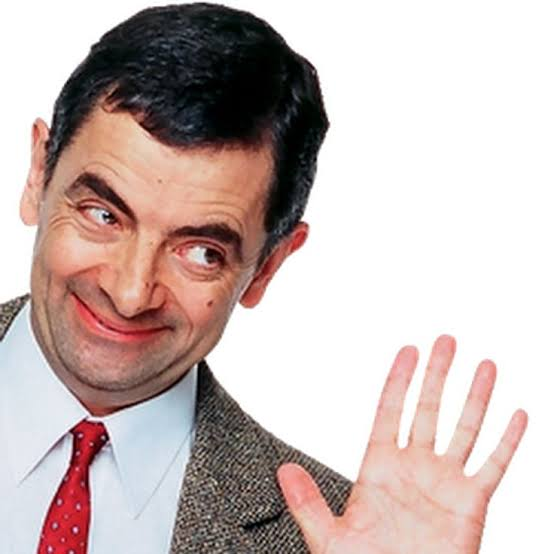
Send feedback here.